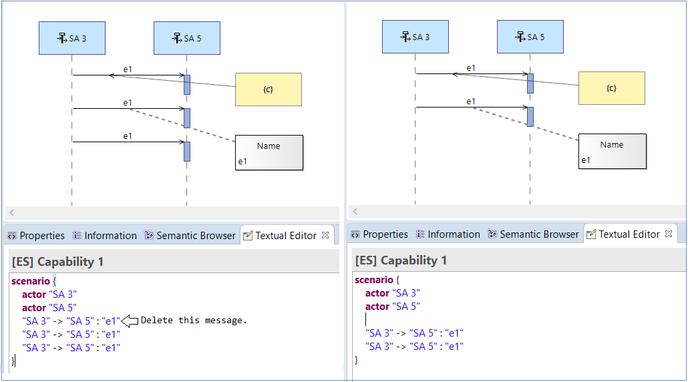
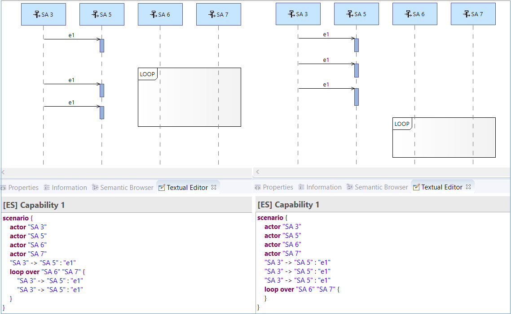

Limitations
The following limitations are known for the Capella Textual Editor Addon:
- The following tools are not supported:
- Duration
- Shared Data
- Exchange Context
- Multiple lifelines of the same instance role are not enabled.
- Other than instance roles, duplicated elements are allowed, however when deleting an element from the textual editor, the matching algorithm will find the last unmatched element in diagram and delete that one as in the image below:

- When the combined fragments are translated to text, the executions that happen on parallel timelines will be displayed inside of the combined fragment in text, to preserve the order of the elements on a timeline when saving data back to the diagram, as in the image below:
